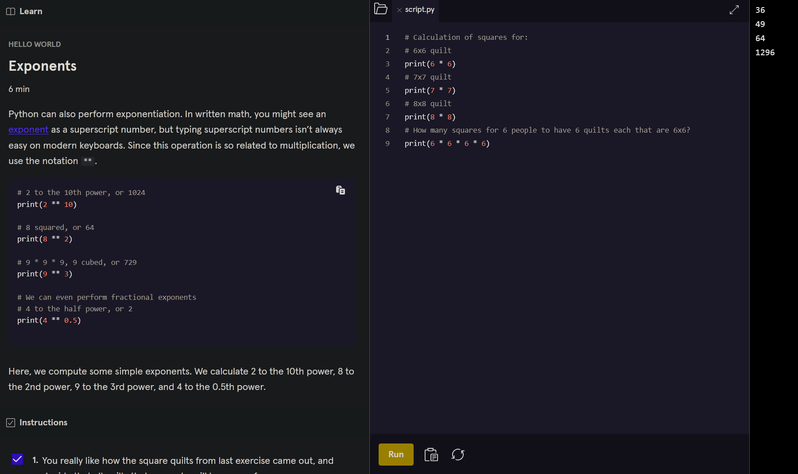
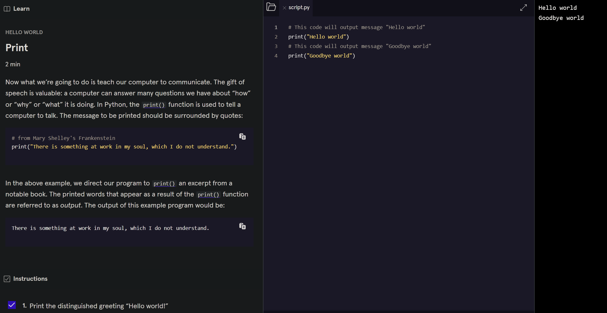

Loading...
Here you will find my diary/posts that showcase my latest projects such as homelab testing, coding projects like this HTML static website, and much more!
Take me homeThis entry documents my early experiences learning the Python programming language
As a beginner in programming, I found that Python was the most recommended language in my research. It’s often suggested as a first language because it’s known for being beginner friendly and easy to learn. Additionally, Python is widely used in various fields, including data science, machine learning, and artificial intelligence.
There are several ways to start coding. Since I had already set up my homelab (as seen in my previous diary entry), I decided to follow a YouTube guide to install Python 3 and IDLE (Integrated Development Environment). I also had the option to use Visual Studio Code (VSC).
After setting everything up, I found myself unsure of where to start. An episode of an IT career podcast I listened to discussed effective learning strategies, emphasizing the benefits of structured courses with step-by-step lessons. This approach worked well for both the host and guest, so I decided to explore online courses.
After researching different platforms, I started a free trial on Codecademy (www.codecademy.com). Right away, I found it to be highly effective. The lessons are well-structured, easy to follow, and include practical exercises. The built-in coding environment allows you to write, run, and troubleshoot code directly within the lessons, making the learning process much more interactive.
Here’s how the lesson layout is structured
Left: The Learn section introduces the topic and provides explanations
Middle: This is the coding area, where you can add, remove, and edit strings and values
Right: The output section displays the results when you run your code
This setup makes it easy to learn, practice, and see immediate feedback.
 